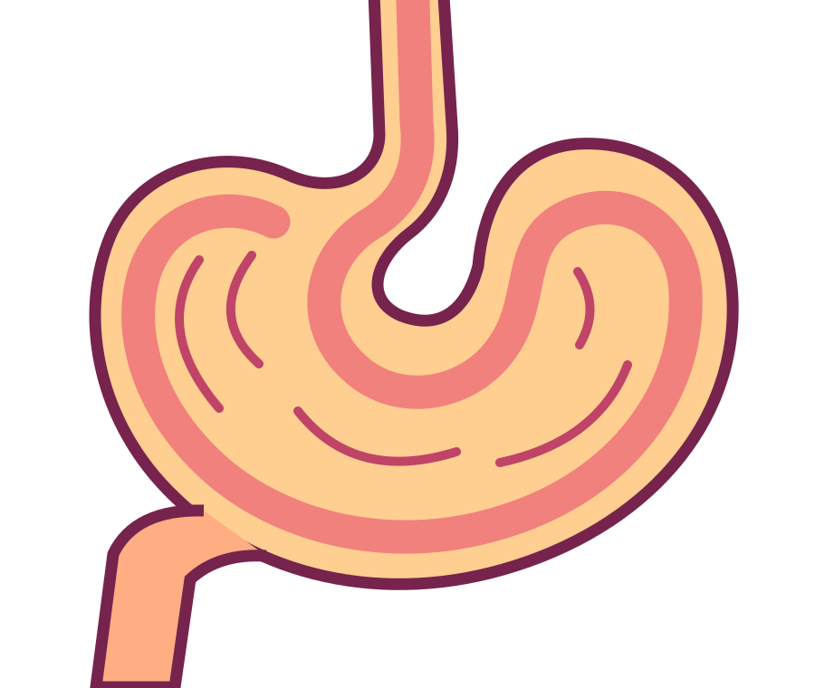
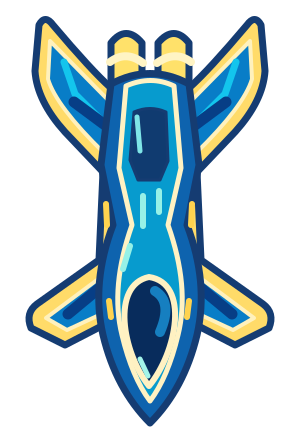
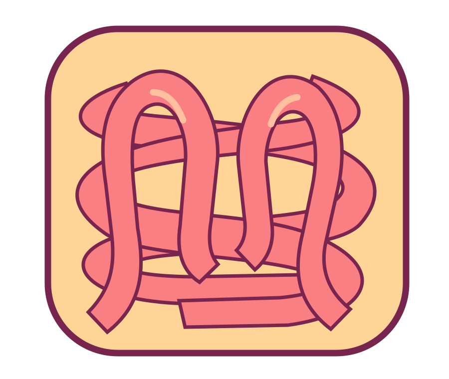
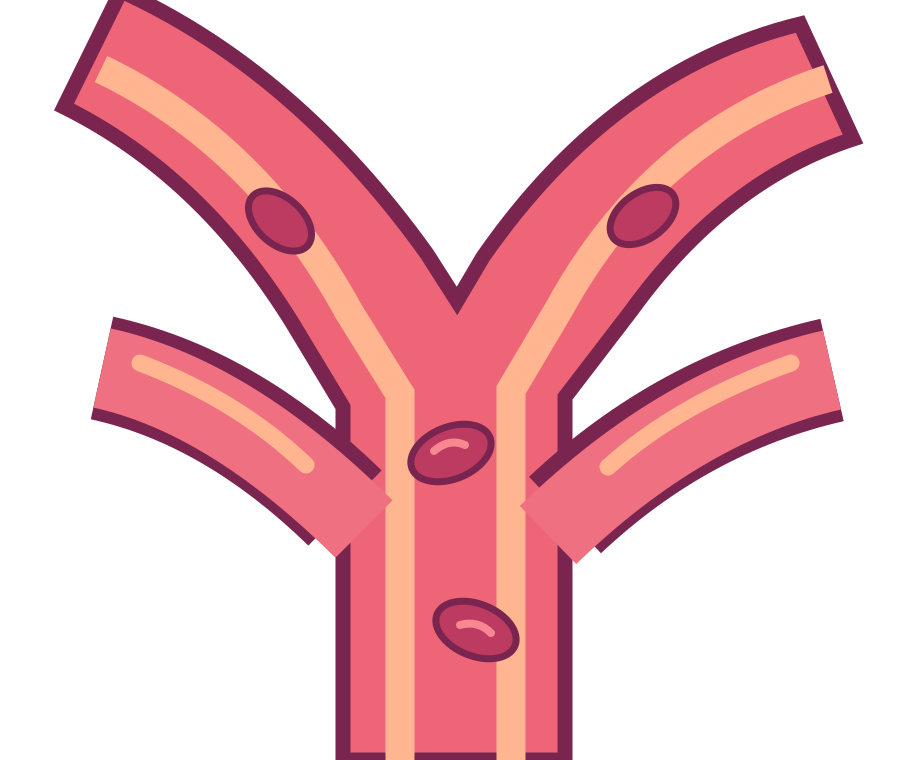
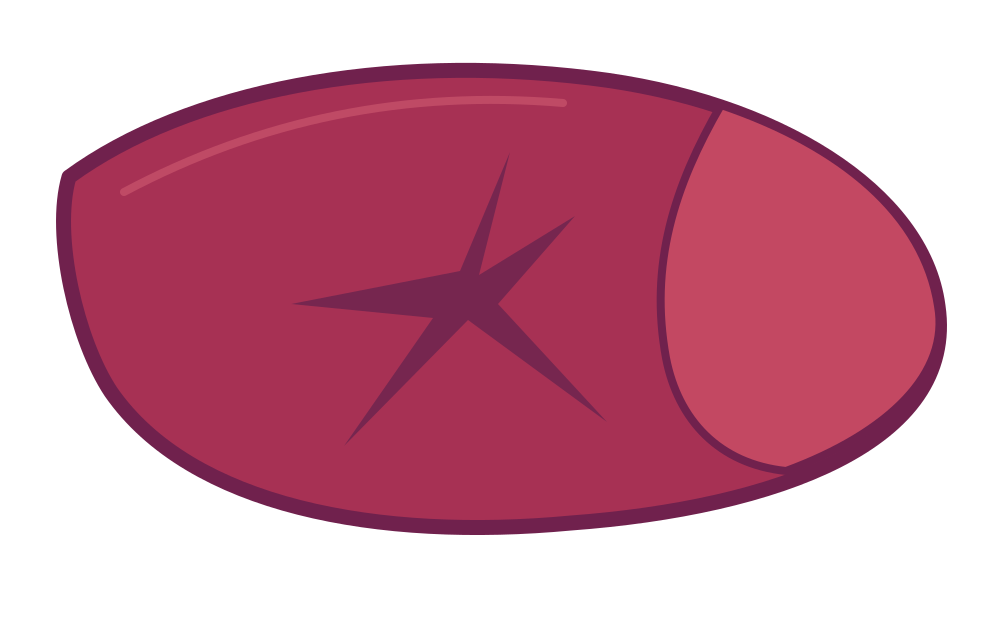

02 · Enter a new world
A universe
within.
From the first step into the digestive tract, a new journey begins.
Stomach

03 · Navigate
Small steps.
New paths.
Follow the twists and turns. Look a little closer at the world inside.
Small intestine
04 · Make connections
A world
connected.
One question leads to another. Explore the connections that inspire our work.
Portal circulation

The journey is just the beginning
Meet the science
behind Renata.
We’re exploring a synthetic biology approach to lithocholic acid (LCA) sulfation. Our proposed design pairs a BtSULT enzyme cassette with a second cassette intended to supply PAPS, the sulfate donor.
Read our project storyA visual journey inspired by biology. The spacecraft and organs are illustrative, not a demonstrated delivery route. Renata’s system is a research proposal; successful assembly, expression, and LCA sulfation have not yet been established.